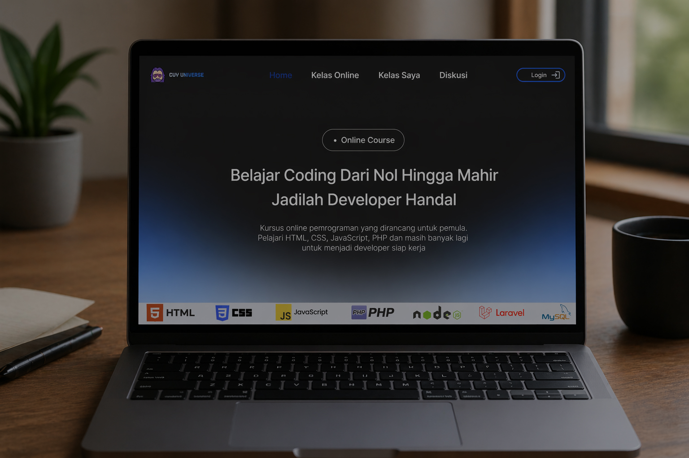
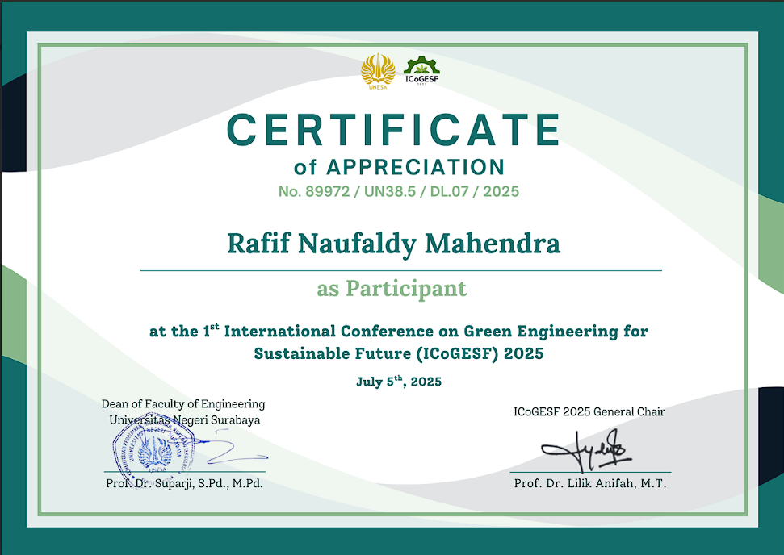
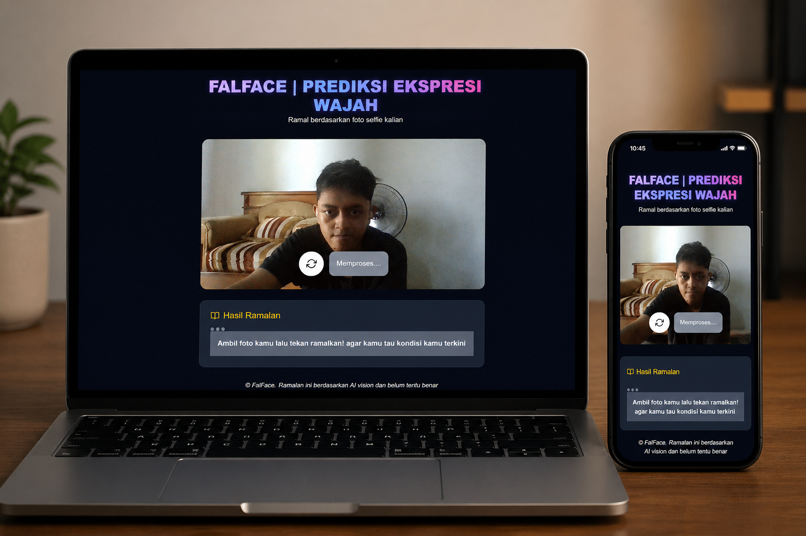
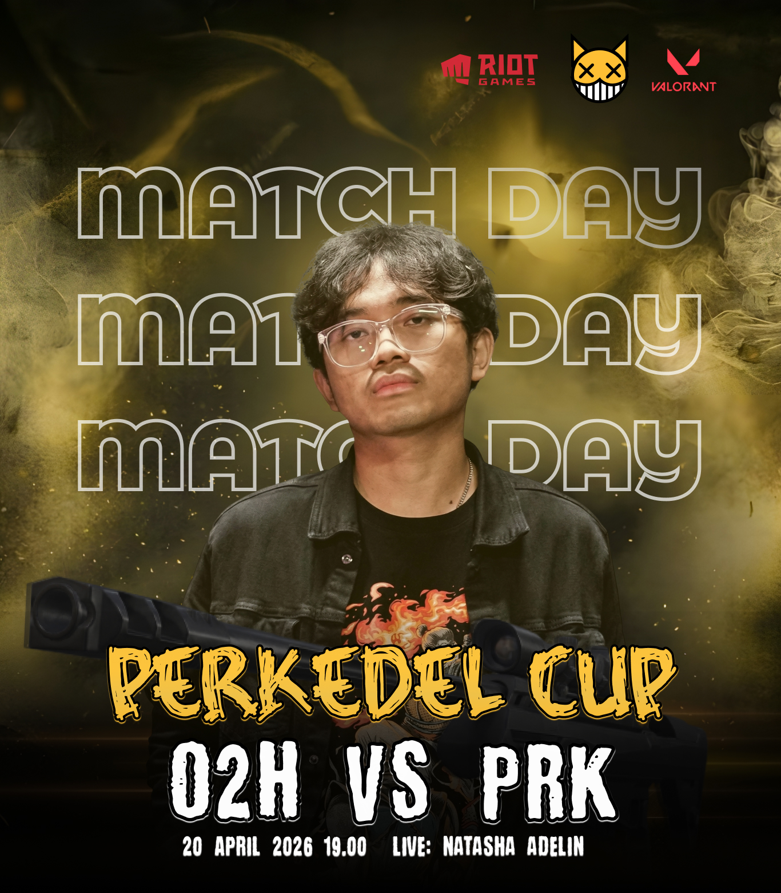
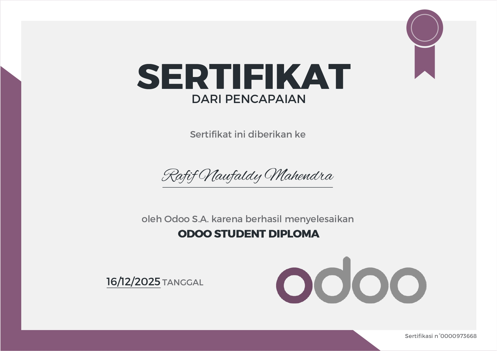
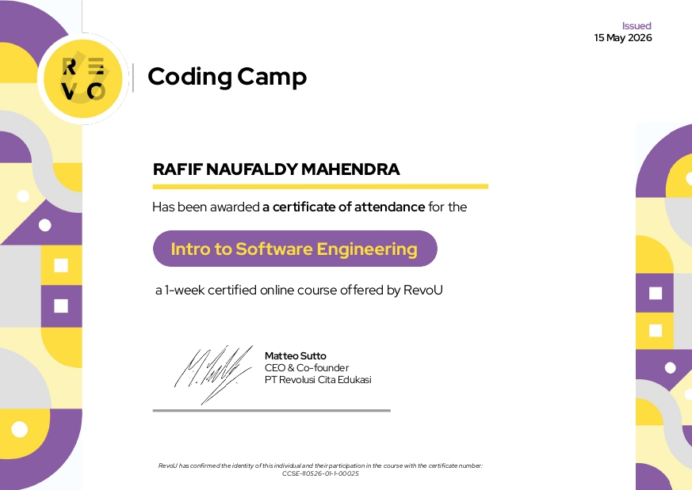

PENGALAMAN

Desain UI/UX Fal Universe
Desain web course online Fal Universe yang dibuat dengan menggunakan Figma. Desain ini dibuat karena saya berkeinginan meredesign website course milik Dea Afrizal. Selain itu design ini juga terinspirasi dari website course milik Programer Zaman Now.
Dibuat pada Tanggal 10 Juni 2026

Certificate International Conference on Green Engineering for Sustainable Future 2025
Ini merupakan certifikan seminar tentang penggunaan energi ramah lingkungan untuk sebuah perusahaan. penggunaan energi ramah lingkungan sangat penting dalam sebuah perusahaan agar lingkungan di sekitar tidak cepat rusak
Dibuat pada Tanggal 17 Juli 2025

WEBSITE CUACA
Ini merupakan website cuaca. Di dalam website ini memiliki fitur prediksi cuaca berupa kelembapan, suhu, kecepatan angin dan prediksi cuaca 7 hari kedepan. Website dibuat dengan bahasa pemrograman html, css, dan javascript murni dengan bantuan publik API dari situs weather API. Web ini dibuat saat saya mengikuti course online Javascript dari Dea Afrizal.
Dibuat pada Tanggal 13 Juli 2025

FALFACE
Ini merupakan website untuk meramal masa depan menggunakan foto wajah dimana user harus memotret wajah terlebih dahulu lali akan diramal oleh AI. Website ini teritegrasi dengan AI API dan dibuat dengan bahasa pemrograman javascript dan Next.js. Website ini saya buat saat mengikuti course Dea Afrizal
Dibuat pada Tanggal 19 Oktober 2025

Poster Tournament Circle Streamer
Ini merupakan poster tournament valorant circle streamer milik Luthfi Halimawan yaitu O2H melawan circle streamer milik Nugi Darmawan yaitu Party Neraka. Poster ini ibuat menggunakan figma.
Dibuat pada Tanggal 24 April 2026

Odoo Student Diploma Certificate
Ini merupakan sertifikat dari course online Odoo yang saya ikuti. Course ini membahas tentang bagaimana cara membuat sebuah website menggunakan Odoo.
Dibuat pada Tanggal 16 Desember 2025

Certificate Software Engineer Revou
Ini merupakan sertifikat dari course online Revou yang saya ikuti. Course ini membahas tentang bagaimana cara menjadi seorang software engineer, Bahasa Program yang digunakan, dan pemanfaatan AI dalam pembuatan website menggunakan aplikasi Kiro.